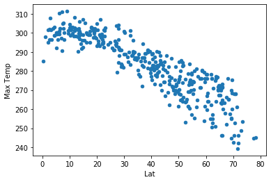
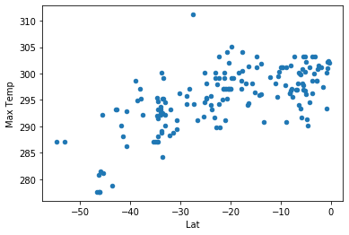

Latitude vs. Temp

This plot shows a clear relationship between temperature and latitude. The higher the latitude (nearer the poles), the lower the temperature. No surprise, right? At the time this dataset was collected, the Northern Hemisphere was in late winter, which means that the Southern Hemisphere was in late summer. This is reflected in the plot, which shows much lower temperatures at high latitudes in the north than the south. What happens if we look at the two hemispheres separately?
 
Here is a bit of a surprise: in the Northern Hemisphere, the highest temps are not at the equator, but at about 10 degrees north latitude. There is more land relative to ocean at ten degrees north than at the equator; this in turn means more cities at a distance inland from the moderating influence of the ocean. The Southern Hemisphere not only shows less temperature variation, as expected for summer, but also fewer data points overall, reflecting its higher proportion of ocean to land relative to the Northern Hemisphere.
Visualizations
Click on any chart for further analysis